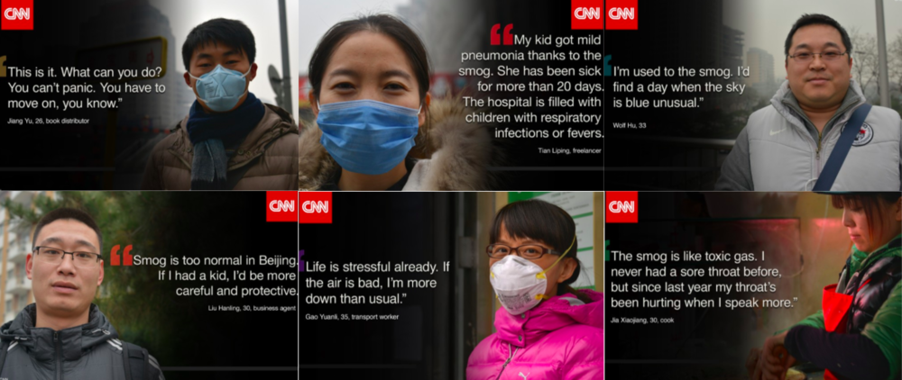
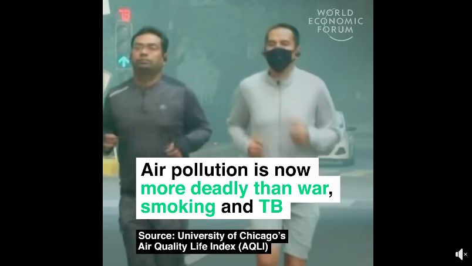
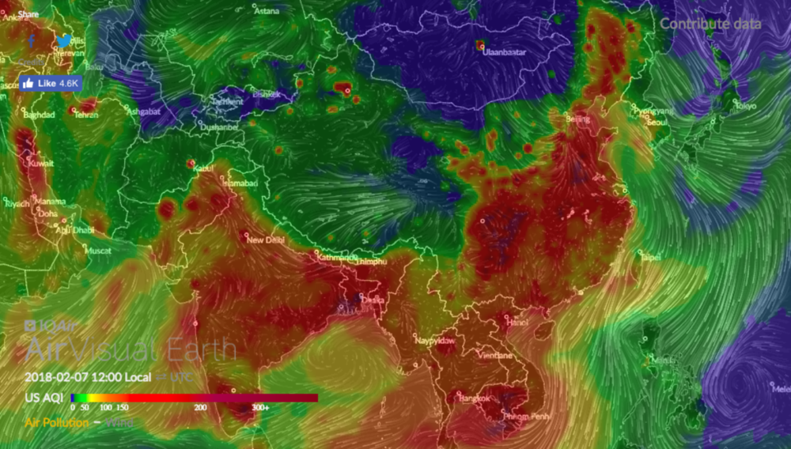

SORA a speculative air poluted environment
Prototype
Drawing from what's happening now...
People from lots of countries are facing the problem of air pollution. So, considering the condition of the environment from these polluted areas, we thought of an environment where the air is so thick with smoke that we won't be able to see the surrounding clearly. This would directly affect people's mood and emotion. According to a research, the people who are currently living in the most air polluted environment happened to experience its effect on their health as well as their mood and emotion.

Click on the image below to watch video
We looked into the "AirVisualEarth" site which gives the real time visual of air pollution.
A Speculative Solution
It is going to take a long time to fully eradicate air pollution. Sao, drawing upon this environmental issue we came up with a solution where the users in the future would possess an Umbrella that acts as an air purifier as well mood enhancer. This futuristic equipment is going to be a mood enhancer because it is going to have a projection of a blue sky under it.

User Testing
We made a rough prototype of what we expect it to look like. We told the users to close their eyes and then look up to catch their surprise. The testing had a positive response about the umbrella from the users.